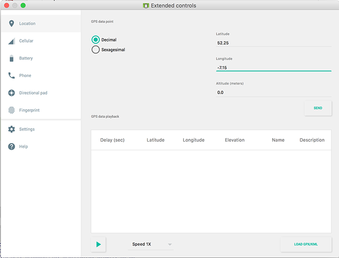

Objectives
This lab is the final lab in the current version and completes our Case Study CoffeeMate with the introduction of Location Awareness and Google Maps in version CoffeeMate.8.0.
Setup - Starter Code
Unlike previous labs, you don't need to download the starter code for this lab as it's basically a copy of CoffeeMate.7.0, so if you wish, you could just continue on with your own version. If you didn't get a chance to finish the previous lab you can download the CoffeeMate.7.0 solution here - CoffeeMate.7.0.Solution.
Either way, It's probably still a good idea to run the App and confirm that the app (our your app) is configured properly and (still) running.
In this lab, you are required to do the following:
Add Location awareness to the App (via a custom MapsFragment class)
Add a Google Map, so the user can see their coffees displayed on a Map
Add Volley Support to CoffeeMate to manage our coffees and their locations on the server (our APi already does most of this)
The following steps will guide you through these requirements, but before we can do anything with the Google Maps, you need to obtain your own Google Maps Key to add to your manifest file.
Obtaining your Google Maps Key
First of all, you need to Get an API Key on the Android Developer site as it contains all the info you need to obtain your Key. You'll have some of the work done already (from the previous lab) but there's still a bit of work to do, so if you get stuck just ask.
Once you have your key, the next thing to do is add the following to your strings.xml
<string name="title_map">Coffee Map</string>
<string name="google_maps_key">abcdefghijklmnopetcetcetc</string>where 'abcdefghijklmnopetcetcetc' is your API Key.
Next, open up your manifest file and add the following just before the closing "application" tag
<meta-data
android:name="com.google.android.geo.API_KEY"
android:value="@string/google_maps_key" />
<uses-library android:name="org.apache.http.legacy" android:required="false"/>Also, in your manifest file add the following permissions
<uses-permission android:name="ie.cm.permission.MAPS_RECEIVE"/>
<uses-permission android:name="android.permission.ACCESS_FINE_LOCATION"/>At the time of writing (December 2018) there were a few updates to dependency versions made (which this lab is based on) so can you confirm your app/build.gradle is very similar to the following
apply plugin: 'com.android.application'
android {
compileSdkVersion 28
defaultConfig {
applicationId "ie.cm"
minSdkVersion 28
targetSdkVersion 28
versionCode 1
versionName "1.0"
testInstrumentationRunner "android.support.test.runner.AndroidJUnitRunner"
}
buildTypes {
release {
minifyEnabled false
proguardFiles getDefaultProguardFile('proguard-android.txt'), 'proguard-rules.pro'
}
}
}
dependencies {
implementation fileTree(dir: 'libs', include: ['*.jar'])
implementation 'com.android.support:appcompat-v7:28.0.0'
implementation 'com.android.support:support-v4:28.0.0'
implementation 'com.android.support:design:28.0.0'
implementation 'com.android.support.constraint:constraint-layout:1.1.3'
testImplementation 'junit:junit:4.12'
androidTestImplementation 'com.android.support.test:runner:1.0.2'
androidTestImplementation 'com.android.support.test.espresso:espresso-core:3.0.2'
implementation 'com.makeramen:roundedimageview:2.2.1'
implementation "com.android.support:recyclerview-v7:28.0.0"
implementation "com.android.support:cardview-v7:28.0.0"
implementation 'com.android.volley:volley:1.1.1'
implementation 'com.google.code.gson:gson:2.8.5' // for Googles Gson JSON Parser
implementation 'com.google.android.gms:play-services-auth:15.0.1'
implementation 'com.google.android.gms:play-services-maps:15.0.1'
implementation 'com.google.android.gms:play-services-location:15.0.1'
implementation 'com.shobhitpuri.custombuttons:google-signin:1.0.0'
}
//apply plugin: 'com.google.gms.google-services'and you've got
classpath 'com.google.gms:google-services:3.2.0'in your project/build.gradle.
Sync, and then go ahead and create a new Empty Activity and name the Layout activity_map - this isn't really that important as we will be disregarding the activity in the next step including the layout - we are just using it here to confirm we have configured our key etc. correctly.
now add the following to the layout
<fragment android:name="com.google.android.gms.maps.MapFragment"
android:id="@+id/map"
android:layout_width="match_parent"
android:layout_height="match_parent"/>Finally, (for this step) add the following to your Home Activity, to temporarily handle launching our new Map activity, if the user selects the menu option.
else if (id == R.id.nav_map) {
startActivity(new Intent(this, Map.class));
}Run your app and select "View on Map"
and if everything goes according to plan, you should get
Congratulations - you can now go ahead and build map based apps!
View Users Current Location
At the moment, when the user selects the 'Map' menu option, they get to see a standard map, but not their own location (or even their coffees locations), so this step (and the next) is about implementing that (we'll look at the coffees location in later steps).
I used this link here for some of the functionality we needed using the latest features of the Api (Dec 2018)
As we want to keep in line with the UI guidelines and approach, it makes sense to use a Fragment so first of all go ahead and create a new (Blank) Fragment called MapsFragment (NOT MapFragment) but DON'T create a layout or include interface callbacks

Make sure it extends from SupportMapFragment and implements the following interfaces, like so
public class MapsFragment extends SupportMapFragment implements
GoogleMap.OnInfoWindowClickListener,
GoogleMap.OnMapClickListener,
GoogleMap.OnMarkerClickListener,
OnMapReadyCallback {
...
}Fix the errors and replace the existing newInstance() method with this one
public static MapsFragment newInstance() {
MapsFragment fragment = new MapsFragment();
return fragment;
}Replace the existing instance variables with these
private LocationRequest mLocationRequest;
private FusedLocationProviderClient mFusedLocationClient;
private LocationCallback mLocationCallback;
private List<Coffee> mCoffeeList;
private long UPDATE_INTERVAL = 5000; /* 5 secs */
private long FASTEST_INTERVAL = 1000; /* 1 sec */
private GoogleMap mMap;
private float zoom = 13f;
public CoffeeMateApp app = CoffeeMateApp.getInstance();
private static final int PERMISSION_REQUEST_CODE = 200;
private final int[] MAP_TYPES = {
GoogleMap.MAP_TYPE_SATELLITE,
GoogleMap.MAP_TYPE_NORMAL,
GoogleMap.MAP_TYPE_HYBRID,
GoogleMap.MAP_TYPE_TERRAIN,
GoogleMap.MAP_TYPE_NONE
};
private int curMapTypeIndex = 1;Replace onCreate() with
@Override
public void onCreate(Bundle savedInstanceState) {
super.onCreate(savedInstanceState);
try {
mFusedLocationClient = LocationServices.getFusedLocationProviderClient(getActivity());
createLocationCallback();
createLocationRequest();
}
catch(SecurityException se) {
Toast.makeText(getActivity(),"Check Your Permissions",Toast.LENGTH_SHORT).show();
}
}and add
private void createLocationRequest() {
mLocationRequest = new LocationRequest();
mLocationRequest.setInterval(UPDATE_INTERVAL);
mLocationRequest.setFastestInterval(FASTEST_INTERVAL);
mLocationRequest.setPriority(LocationRequest.PRIORITY_HIGH_ACCURACY);
//mLocationRequest.setPriority(LocationRequest.PRIORITY_BALANCED_POWER_ACCURACY);
}
/* Creates a callback for receiving location events.*/
private void createLocationCallback() {
mLocationCallback = new LocationCallback() {
@Override
public void onLocationResult(LocationResult locationResult) {
super.onLocationResult(locationResult);
app.mCurrentLocation = locationResult.getLastLocation();
initCamera(app.mCurrentLocation);
}
};
}Remove onCreateView() and replace with
@Override
public void onViewCreated(View view, Bundle savedInstanceState) {
super.onViewCreated(view, savedInstanceState);
setHasOptionsMenu(true);
getActivity().setTitle(R.string.title_map);
}Add/implement the following methods
public void initListeners() {
mMap.setOnMarkerClickListener(this);
mMap.setOnInfoWindowClickListener(this);
mMap.setOnMapClickListener(this);
}
@Override
public void onResume() {
super.onResume();
getMapAsync(this);
if (checkPermission()) {
if (app.mCurrentLocation != null) {
Toast.makeText(getActivity(), "GPS location was found!", Toast.LENGTH_SHORT).show();
} else {
Toast.makeText(getActivity(), "Current location was null, Setting Default Values!", Toast.LENGTH_SHORT).show();
app.mCurrentLocation = new Location("Waterford City Default (WIT)");
app.mCurrentLocation.setLatitude(52.2462);
app.mCurrentLocation.setLongitude(-7.1202);
}
if(mMap != null) {
initCamera(app.mCurrentLocation);
mMap.setMyLocationEnabled(true);
}
startLocationUpdates();
}
else if (!checkPermission()) {
requestPermission();
}
}
private void initCamera(Location location) {
if (zoom != 13f && zoom != mMap.getCameraPosition().zoom)
zoom = mMap.getCameraPosition().zoom;
CameraPosition position = CameraPosition.builder()
.target(new LatLng(location.getLatitude(),
location.getLongitude()))
.zoom(zoom).bearing(0.0f)
.tilt(0.0f).build();
mMap.animateCamera(CameraUpdateFactory
.newCameraPosition(position), null);
}
public void startLocationUpdates() {
try {
mFusedLocationClient.requestLocationUpdates(mLocationRequest,
mLocationCallback, Looper.myLooper());
}
catch(SecurityException se) {
Toast.makeText(getActivity(),"Check Your Permissions on Location Updates",Toast.LENGTH_SHORT).show();
}
}And replace the relevant methods with the following
@Override
public void onMapReady(GoogleMap googleMap) {
mMap = googleMap;
mMap.setMapType(MAP_TYPES[curMapTypeIndex]);
initListeners();
if(checkPermission()) {
mMap.setMyLocationEnabled(true);
initCamera(app.mCurrentLocation);
}
else if (!checkPermission()) {
requestPermission();
}
mMap.getUiSettings().setMapToolbarEnabled(true);
mMap.getUiSettings().setCompassEnabled(true);
mMap.getUiSettings().setMyLocationButtonEnabled(true);
mMap.getUiSettings().setAllGesturesEnabled(true);
mMap.setTrafficEnabled(true);
mMap.setBuildingsEnabled(true);
mMap.getUiSettings().setZoomControlsEnabled(true);
}
//http://www.journaldev.com/10409/android-handling-runtime-permissions-example
private boolean checkPermission() {
int result = ContextCompat.checkSelfPermission(getActivity(), ACCESS_FINE_LOCATION);
return result == PackageManager.PERMISSION_GRANTED;
}
private void requestPermission() {
ActivityCompat.requestPermissions(getActivity(), new String[]{ACCESS_FINE_LOCATION},
PERMISSION_REQUEST_CODE);
}
@Override
public void onRequestPermissionsResult(int requestCode, String permissions[], int[] grantResults) {
switch (requestCode) {
case PERMISSION_REQUEST_CODE:
if (grantResults.length > 0) {
boolean locationAccepted = grantResults[0] == PackageManager.PERMISSION_GRANTED;
if (locationAccepted) {
Snackbar.make(getView(), "Permission Granted, Now you can access location data.",
Snackbar.LENGTH_LONG).show();
if(checkPermission())
mMap.setMyLocationEnabled(true);
startLocationUpdates();
}
else {
Snackbar.make(getView(), "Permission Denied, You cannot access location data.",
Snackbar.LENGTH_LONG).show();
if (Build.VERSION.SDK_INT >= Build.VERSION_CODES.M) {
if (shouldShowRequestPermissionRationale(ACCESS_FINE_LOCATION)) {
showMessageOKCancel("You need to allow access to both the permissions",
new DialogInterface.OnClickListener() {
@Override
public void onClick(DialogInterface dialog, int which) {
if (Build.VERSION.SDK_INT >= Build.VERSION_CODES.M) {
requestPermissions(new String[]{ACCESS_FINE_LOCATION},
PERMISSION_REQUEST_CODE);
}
}
});
return;
}
}
}
}
break;
}
}
private void showMessageOKCancel(String message, DialogInterface.OnClickListener okListener) {
new AlertDialog.Builder(getActivity())
.setMessage(message)
.setPositiveButton("OK", okListener)
.setNegativeButton("Cancel", null)
.create()
.show();
}Now, open your Home Activity and instead of loading the Map Activity (as is currently the case) implement the necessary code to display our MapsFragment.
If you run the app now you will probably get a
java.lang.NullPointerException: Appropriate Api was not requested.error so you need to add
.addApi(LocationServices.API)to your GoogleClient when you build it in your Login activity, so fix that now.
If you've followed all the steps correctly, and you run the app again you should be seeing something like this (make sure to accept the permissions)
and then this
Experiment with different coordinates and restarting your app and then use the emulator to send coordinates while the app is running (as below) as see what happens?
The next few steps will be about building on the Location Awareness of our App and updating the Map automatically, as the user moves around and adding a 'Marker' to show these movements.
Before you move on, just confirm your app is now Location Aware, like so, when you 'View on Map'
but when you send new coordinates to the emulator, you should see the 'blue dot' move to that new location, as below


View Users Coffee Locations
The last step in this lab involves displaying the users coffees on the map (with a marker which you can get here and add to your 'drawable' resources folder), along with the users location (which was the previous step) so we need to modify a few classes here, namely
{kind=link}
- MapsFragment
- AddFragment
but even before that we need to refactor our Coffee model so go ahead and add the following classes in your 'models' package
public class Coords {
public double latitude;
public double longitude;
}and
public class Marker {
public int id = 1;
public Coords coords = new Coords();
}then replace your existing Coffee class with the following
public class Coffee
{
public String _id;
public String name;
public String shop;
public double rating;
public double price;
public boolean favourite;
public String googlephoto;
public String usertoken;
public String address;
public Marker marker = new Marker();
public Coffee() {}
public Coffee(String name, String shop, double rating,
double price, boolean fav, String photo, String token,
String address, double lat, double lng)
{
//this._id = UUID.randomUUID().toString();
this.name = name;
this.shop = shop;
this.rating = rating;
this.price = price;
this.favourite = fav;
this.googlephoto = photo;
this.usertoken = token;
this.address = address;
this.marker.coords.latitude = lat;
this.marker.coords.longitude = lng;
}
@Override
public String toString() {
return "Coffee [name=" + name
+ ", shop =" + shop + ", rating=" + rating + ", price=" + price
+ ", fav =" + favourite + " "
+ usertoken + " " + address + " " + marker.coords.latitude
+ " " + marker.coords.longitude + "]";
}
}NOTE : It's very important that you delete any existing coffees you have on the server BEFORE you go ahead and add some dummy coffees (see below). Because our model has changed, specifically the 'marker' property, the JSON returned from the server has changed, so our CoffeeApi GET call will crash if it tries to request different types of Coffees (ones with location data and ones without) at the same time
MapsFragment
Here we need to inspect our list of coffees and (using the longitude and latitude coordinates) place a marker on the map indicating the location of each coffee.
So, first, open up your MapsFragment class and add the following method
public void addCoffees(List<Coffee> list){
for(Coffee c : list)
mMap.addMarker(new MarkerOptions()
.position(new LatLng(c.marker.coords.latitude, c.marker.coords.longitude))
.title(c.name + " €" + c.price)
.snippet(c.shop + " " + c.address)
.icon(BitmapDescriptorFactory.fromResource(R.drawable.coffee)));
}To ensure our list of coffees is up to date and the most recent one, the MapsFragment class needs to implement the VolleyListener interface, so go ahead and complete that now.
Once you've implemented the necessary methods, add a call to addCoffees() in your setList() method.
Now, add the following APi calls to your onResume() AFTER getMapAsync(this)
CoffeeApi.attachListener(this);
CoffeeApi.get("/coffees/" + app.googleToken);AddFragment
After you've made those changes, you'll get an error in your AddFragment so for the moment, just pass in dummy data for location and address, like so
Coffee c = new Coffee(coffeeName, coffeeShop, ratingValue,
coffeePrice, false, app.googlePhotoURL, app.googleToken,"",0,0);Now, obviously, we don't have any coffees with location info saved on the server yet, so before we try and go adding a coffee via the app, I'd suggest manually adding some dummy coffees using the following method - Make sure you comment it out after your first run, otherwise you'll have multiple coffees added to the same location :)
public void addCoffeeData(){
Coffee c1 = new Coffee("Standard Black FF", "Tescos",2.5,1.99,true,
app.googlePhotoURL,app.googleToken,"Address 1", 52.26, -7.12);
Coffee c2 = new Coffee("Standard Green FF", "The Green Room",2.5,1.99,false,
app.googlePhotoURL,app.googleToken,"Address 2",52.27, -7.13);
Coffee c3 = new Coffee("Regular Joe FF", "Joe's Place",3.5,2.99,true,
app.googlePhotoURL,app.googleToken,"Address 3",52.24,-7.10);
Coffee c4 = new Coffee("Espresso FF", "Ardkeen Stores",4.5,1.49,false,
app.googlePhotoURL,app.googleToken,"Address 4",52.25,-7.145);
CoffeeApi.post("/coffees/" + app.googleToken,c1);
CoffeeApi.post("/coffees/" + app.googleToken,c2);
CoffeeApi.post("/coffees/" + app.googleToken,c3);
CoffeeApi.post("/coffees/" + app.googleToken,c4);
}so when you run your app, you know it's working correctly if you see your coffees, something like this - feel free to change the coordinates, or add in another coffee.
Adding a Coffee - Refactored for Location Data & Maps
Now that we can see existing coffees on our Map, what about when we add new coffees on the device? This is the final step in our Case Study and involves a bit of work in refactoring our AddFragment as we need to grab the current location to save with our coffee details.
And for fun :) we'll also embed our MapsFragment inside the AddFragment layout, so we can see where we're adding our coffee, like so
First thing that needs to be done is make our AddFragment Location Aware so go ahead and ensure your Fragment implements the correct callback interface (OnMapReadyCallback) and also implement our VolleyListener to get the latest version of the coffees to display on the map. See if you can implement the necessary code to display the map with all the users coffees - you can refer to the lecture material if necessary, but basically you'll need to GET your coffees once the Map is READY and then ADD your coffees in the VolleyListener callback.
Now open up your fragment_add and add the following fragment element
<fragment
android:name="ie.cm.fragments.MapsFragment"
android:id="@+id/addmap"
android:layout_width="364dp"
android:layout_height="162dp"
/>Note that the fragment name is our own Custom MapFragment and not the standard MapFragment. Your layout might be a bit all over the place as a result :) so I've since converted the layout to a ConstraintLayout, which you can find below and can replace yours with, if you wish?
<?xml version="1.0" encoding="utf-8"?>
<android.support.constraint.ConstraintLayout xmlns:android="http://schemas.android.com/apk/res/android"
xmlns:app="http://schemas.android.com/apk/res-auto"
xmlns:tools="http://schemas.android.com/tools"
android:id="@+id/addLayout"
android:layout_width="match_parent"
android:layout_height="match_parent"
tools:context=".fragments.AddFragment">
<TextView
android:id="@+id/addfooter"
android:layout_width="0dp"
android:layout_height="36dp"
android:background="@color/colorPrimary"
android:paddingTop="5dp"
android:text="@string/appWebsite"
android:textAlignment="center"
android:textColor="@color/colorFontWhite"
android:textSize="16sp"
android:textStyle="bold"
app:layout_constraintBottom_toBottomOf="parent"
app:layout_constraintEnd_toEndOf="parent"
app:layout_constraintHorizontal_bias="0.523"
app:layout_constraintStart_toStartOf="parent"
app:layout_constraintTop_toTopOf="parent"
app:layout_constraintVertical_bias="1.0" />
<TextView
android:id="@+id/addPriceTV"
android:layout_width="99dp"
android:layout_height="43dp"
android:layout_marginStart="36dp"
android:layout_marginTop="8dp"
android:layout_marginEnd="8dp"
android:layout_marginBottom="8dp"
android:paddingTop="10dp"
android:text="@string/coffeePriceLbl"
android:textAlignment="textEnd"
android:textColor="@color/colorFontBlack"
android:textSize="18sp"
app:layout_constraintBottom_toBottomOf="parent"
app:layout_constraintEnd_toStartOf="@+id/addPriceET"
app:layout_constraintHorizontal_bias="0.0"
app:layout_constraintStart_toStartOf="parent"
app:layout_constraintTop_toTopOf="parent"
app:layout_constraintVertical_bias="0.21" />
<TextView
android:id="@+id/addShopTV"
android:layout_width="99dp"
android:layout_height="43dp"
android:layout_marginStart="36dp"
android:layout_marginTop="8dp"
android:layout_marginEnd="8dp"
android:layout_marginBottom="8dp"
android:paddingTop="10dp"
android:text="@string/coffeeShopLbl"
android:textAlignment="textEnd"
android:textColor="@color/colorFontBlack"
android:textSize="18sp"
app:layout_constraintBottom_toBottomOf="parent"
app:layout_constraintEnd_toStartOf="@+id/addShopET"
app:layout_constraintHorizontal_bias="0.083"
app:layout_constraintStart_toStartOf="parent"
app:layout_constraintTop_toTopOf="parent"
app:layout_constraintVertical_bias="0.115" />
<TextView
android:id="@+id/addNameTV"
android:layout_width="99dp"
android:layout_height="43dp"
android:layout_marginStart="36dp"
android:layout_marginEnd="8dp"
android:paddingTop="10dp"
android:text="@string/coffeeNameLbl"
android:textAlignment="textEnd"
android:textColor="@color/colorFontBlack"
android:textSize="18sp"
app:layout_constraintBottom_toTopOf="@+id/addShopTV"
app:layout_constraintEnd_toStartOf="@+id/addNameET"
app:layout_constraintHorizontal_bias="0.0"
app:layout_constraintStart_toStartOf="parent"
app:layout_constraintTop_toTopOf="parent"
app:layout_constraintVertical_bias="0.882" />
<EditText
android:id="@+id/addNameET"
android:layout_width="189dp"
android:layout_height="44dp"
android:layout_marginStart="8dp"
android:layout_marginEnd="40dp"
android:ems="10"
android:hint="Enter Coffee Name"
android:inputType="textPersonName"
app:layout_constraintBottom_toBottomOf="parent"
app:layout_constraintEnd_toEndOf="parent"
app:layout_constraintHorizontal_bias="0.447"
app:layout_constraintStart_toEndOf="@+id/addNameTV"
app:layout_constraintTop_toTopOf="parent"
app:layout_constraintVertical_bias="0.034" />
<EditText
android:id="@+id/addPriceET"
android:layout_width="131dp"
android:layout_height="42dp"
android:layout_marginStart="8dp"
android:layout_marginEnd="100dp"
android:ems="10"
android:hint="Enter Price"
android:inputType="numberDecimal"
app:layout_constraintBottom_toBottomOf="parent"
app:layout_constraintEnd_toEndOf="parent"
app:layout_constraintHorizontal_bias="0.447"
app:layout_constraintStart_toEndOf="@+id/addPriceTV"
app:layout_constraintTop_toTopOf="parent"
app:layout_constraintVertical_bias="0.219" />
<EditText
android:id="@+id/addShopET"
android:layout_width="189dp"
android:layout_height="45dp"
android:layout_marginStart="8dp"
android:layout_marginEnd="40dp"
android:ems="10"
android:hint="Enter Shop"
android:inputType="textPersonName"
app:layout_constraintBottom_toBottomOf="parent"
app:layout_constraintEnd_toEndOf="parent"
app:layout_constraintHorizontal_bias="0.993"
app:layout_constraintStart_toStartOf="parent"
app:layout_constraintTop_toTopOf="parent"
app:layout_constraintVertical_bias="0.124" />
<RatingBar
android:id="@+id/addRatingBar"
android:layout_width="242dp"
android:layout_height="52dp"
android:layout_marginTop="20dp"
android:rating="1"
android:stepSize="0.5"
app:layout_constraintBottom_toTopOf="@+id/editfooter"
app:layout_constraintEnd_toEndOf="parent"
app:layout_constraintStart_toStartOf="parent"
app:layout_constraintTop_toBottomOf="@+id/addPriceET"
app:layout_constraintVertical_bias="0.213" />
<fragment
android:id="@+id/addmap"
android:name="ie.cm.fragments.MapsFragment"
android:layout_width="364dp"
android:layout_height="162dp"
android:layout_marginStart="8dp"
android:layout_marginTop="8dp"
android:layout_marginEnd="8dp"
android:layout_marginBottom="8dp"
app:layout_constraintBottom_toBottomOf="@+id/addfooter"
app:layout_constraintEnd_toEndOf="parent"
app:layout_constraintStart_toStartOf="parent"
app:layout_constraintTop_toTopOf="parent"
app:layout_constraintVertical_bias="0.627"
tools:layout="@layout/activity_map" />
<Button
android:id="@+id/addCoffeeBtn"
android:layout_width="79dp"
android:layout_height="84dp"
android:layout_marginStart="8dp"
android:layout_marginTop="8dp"
android:layout_marginEnd="8dp"
android:layout_marginBottom="8dp"
android:background="@color/colorFontOffWhite"
android:drawableTop="@drawable/blue_add_48"
android:elevation="5dp"
android:text="@string/addCoffeeBtnLbl"
app:layout_constraintBottom_toBottomOf="@+id/addfooter"
app:layout_constraintEnd_toEndOf="parent"
app:layout_constraintHorizontal_bias="0.501"
app:layout_constraintStart_toStartOf="parent"
app:layout_constraintTop_toBottomOf="@+id/addmap"
app:layout_constraintVertical_bias="0.125" />
</android.support.constraint.ConstraintLayout>If you run your app again and go to 'Add a Coffee' you should see something like this
Take some time to experiment with send different coordinates to the emulator, while you are on the Add Coffee screen, and you should see the map move to that new location - another example of how useful fragments can be!
Adding a Coffee - Updating the Map
Currently we can see the users coffees on a map even while we are on the 'Add a Coffee' screen. Now let's look at updating that map with a newly added Coffee.
First, open your add fragment and remove/comment out the intent to return 'Home', otherwise you'll never see the coffee marker being added.
Now, update the coffee constructor fields to include the latitude and longitude values for the coffee being created and finally, try and implement the code necessary to update our map with the newly created coffee. This is actually a single line of code but refer to the lecture material if you're not sure.
Run your app again, send some coordinates to change your current location, Add a coffee and you should get something like this
For example, we're here
and then change to here
and then we add a coffee
Don't forget to 'clear' the Map before you add your coffees or else you'll get markers on top of markers. Also, it might be useful to reset the fields after a coffee has been added (as above), so go ahead and implement that using the following method (but it is optional)
private void resetFields() {
name.setText("");
shop.setText("");
price.setText("");
ratingBar.setRating(2);
name.requestFocus();
name.setFocusable(true);
}If you click on one of the markers you've added from the device you'll notice that the address field is blank. We need to convert our coordinates into a meaningful address for the user, so that's next.
Adding a Coffee - Reversing Geocoding
At this point when we add a new coffee, we can see it on the map instantly, but the address is empty if this is carried out on the device. To make sure the coffee address (as well as the other info) is stored correctly, we Reverse Geocode the location of the coffee into a meaningful street address and store that.
Introduce the following method into your AddFragment
private String getAddressFromLocation( Location location ) {
Geocoder geocoder = new Geocoder( getActivity() );
String strAddress = "";
Address address;
try {
address = geocoder
.getFromLocation( location.getLatitude(), location.getLongitude(), 1 )
.get( 0 );
strAddress = address.getAddressLine(0) +
" " + address.getAddressLine(1) +
" " + address.getAddressLine(2);
}
catch (IOException e ) {
}
return strAddress;
}and see if you can successfully achieve something along the lines of
this (before)
and then this (after)
Hint : you'll have to make a few changes to the Coffee class as well as when you create the coffee before posting it to the server (Well that's how I did it anyway!)